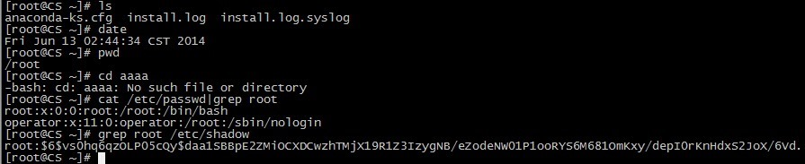

一、数据库简介
数据库，指的是以一定的方式储存在一起、能为多个用户共享、具有尽可能小的冗余度的特点、是与应用程序彼此独立的数据的集合。
1、数据库的组成部分：
（1）数据库：存储数据
（2）数据库管理系统：用户管理数据库的程序、维护数据库的安全、完整、可靠性
（3）数据库应用程序：满足用户对数据管理的更高要求，或者使过程更加直观友好
2、数据库语言：
（1）数据定义语言（DDL）：用于定义和管理数据对象，包括数据库、数据表等。例如：create、drop、alter等。
（2）数据操作语言（DML）：用于操作数据库对象中包含的数据。例如：insert、update、delete语句。
（3）数据查询语言（DQL）：用于查询数据库对象中所包含的数据，能够进行单表查询、连接查询、嵌套查询，以及集合查询等各种复杂程度不同的数据库查询，并将数据返回客户机中显示。例如：select
（4）数据控制语言（DCL）：是用来管理数据库的语言，包括管理权限及数据更改。例如：grant、revoke、commit、rollback等。
二、SQL语句
mysqladmin -u root password '123' #设置密码
mysql -u root -p -h localhost #本地登录数据库
show databases; #查看数据库
show tables; #查看数据表
use 库名; #切换数据库
describe 表名; #查看表结构
增：
create database 库名; #创建数据库
create table 表名 (字段1 值，字段2 值......); #创建数据表
insert into 表名 (字段1，字段2.......) values (数据1，数据2......); #插入数据
create user 用户名@登录地址 identified by '密码' #创建用户
删：
drop database 库名; #删除数据库
drop table 表名; #删除数据表
delete from 表名; #删除表中所有数据
delete from 表名 where 字段; #删除表中某条记录
改：
update 表名 set 字段1 where 字段2; #修改字段1的数据
update 表名 set 字段1 where 字段2 between num1 and num2; #修改从num1到num2之间字段的值
grant 权限 on 数据库.数据表 to '用户'@'地址'; #修改权限
例：grant all on *.* to 'root'@'%' identified by '123456'; #*.*表示所有库，所有表；%表示允许所有连接；连接的账号为：root:123456
revoke 权限1，权限2 on 数据库.数据表 from '用户'@'地址'; #取消权限
set password=password（"密码"） #修改管理员密码或者普通用户修改自身密码
set password for '用户'@'地址'=password（"密码"） #修改普通用户密码
查：
select 字段 from 表名; #查看表内数据
备份：
mysqldump -u root -p --databases 数据库 > 1.sql #备份数据库到1.sql
mysql -u root -p < 1.sql #还原1.sql
mysqldump -u root -p 数据库 数据表 > 2.sql #备份数据库中的某表到2.sql
mysql -u root -p < 2.sql #还原数据表
mysqldump -u root -p --databases 数据库1 数据库2 > 3.sql #备份多个数据库
mysql -u root -p < 3.sql #还原所有数据库
mysql -u root -p --all-databases > 4.sql #备份所有数据库
alter：
alter table 旧表名 rename 新表名; #更改表名
例：alter table person rename ps;
#将表person更名为ps
alter table 表名 modify 字段 字段类型; #更改字段类型
例：alter table ps modify name char(20);
#修改表ps内的name字段的类型
alter table 表名 change 字段名 新字段名 字段类型; #更改字段名(可同时修改字段类型)
例：alter table ps change info information char(50);
#将表ps中的字段info的字段名更改为information
alter table 表名 add 新字段名 新字段类型 first; #添加新字段同时将该字段设置为第一列
例：alter table ps add nian year first;
#向表ps中添加字段nian并设置为第一列
alter table 表名 add 新字段名 新字段类型 after 旧字段名; #添加新字段到某字段后
例：alter table ps add sex char(1) after id;
#向表ps添加字段sex并放置于id字段的后面
alter talbe 表名 drop 字段; #删除字段
例：alter table ps drop nian;
#删除表ps中的字段nian
alter table 表名 modify 旧字段 字段类型 after 旧字段; #调整字段位置（同时修改字段类型）
例：alter talbe ps modify age int(11) not null after sex;
#将表ps内的字段age调整至字段sex后面
mysql -u 用户 -p -h 主机 -P 端口
grant 权限 on 数据库.数据表 to 用户@地址列表 identified by '密码';
地址列表可用%代表所有可用 不可用*
三、mysql日志管理
1、种类：
错误日志：
服务器启动和关闭过程中的信息
服务器运行过程中的错误信息
事务调度器运行一个时间时产生的信息
从服务器上启动从服务器进程时产生的信息
查询日志：一般查询日志
慢查询日志：
二进制日志：
中继日志：主从同步，将主服务器上的二进制文件复制到本地某些日志中
事务日志：记录innodb等支持事务的存储引擎执行事务时产生的日志
show global variables like '%log%' #查看所有的日志变量
2、安装日志监视软件loganalyzer
1）Loganalyzer简介
Loganalyzer是一款syslog日志和其他网络事件数据的web前端。它提供了对日志的简单浏览、搜索、基本分析和一些图表报告功能。数据可以从数据库或一般的syslog文本文件中获取，所以Loganalyzer不需要改变现有的记录架构。基于当前日志数据，它可以处理syslog日志消息，Windows事件日志记录，支持故障排除，使用户能够快速查找日志数据中看出问题的解决方案。
Loganalyzer获取客户端日志会有两种保存模式，一种是直接读取客户端/var/log/目录下的日志并保存到服务端该目录下，一种是读取后保存到日志服务器数据库中，推荐使用后者。
Loganalyzer采用php开发，所以日志服务器需要php的运行环境，本实验采用LAMP。
2）系统环境
Rsyslog Server OS： CentOS 6.5
Rsyslog Server IP： 192.168.1.107
Rsyslog 版本： rsyslog-5.8.10-8.el6.i686
LogAnalyzer 版本： LogAnalyzer 3.6.5 (v3-stable)
LAMP 版本： httpd-2.2.15-30.el6.centos.i686 + mysql-5.1.73-3.el6_5.i686 + php-5.3.3-27.el6_5.i686
防火墙关闭/iptables：Firewall is not running
SELINUX=disabled
Rsyslog Client OS： RHEL 6.4
Rsyslog Client IP： 192.168.1.108
3）安装并设置LAMP环境
3.1、安装LAMP环境
# yum -y install http mysql* php*
3.2、启动服务并加入开机启动
启动Apache
# /etc/init.d/httpd start
# chkconfig httpd on
启动数据库
# /etc/init.d/mysqld start
# chkconfig mysqld on
3.3、设置MySQL root密码
# mysqladmin -uroot password '123456'
3.4、测试php运行环境
# cd /var/www/html
# vim index.php
<?php
phpinfo();
?>
打开浏览器测试该php首页是否正确显示
4）安装服务端软件
4.1、检查是否安装了rsyslog软件
# rpm -q rsyslog #默认已经安装
4.2、安装rsyslog连接MySQL数据库的模块
# yum -y install rsyslog-mysql
rsyslog-mysql为rsyslog将日志传送到MySQL数据库的一个模块，这里必须安装
5）配置服务器端
5.1、导入rsyslog-mysql数据库文件
# cd /usr/share/doc/rsyslog-mysql-5.8.10/
# mysql -uroot -p < createDB.sql
查看数据库
# mysql -uroot -p
mysql>show databases;
mysql>show tables;
导入数据库Syslog库并在该库中创建了两张空表SystemEvents和SystemEventsProperties。
5.2、创建rsyslog用户在mysql下相关权限
# mysql -uroot -p
mysql>grant all on Syslog.* to rsyslog@localhost identified by '123456';
mysql>flush privileges;
mysql>exit
5.3、配置服务端支持rsyslog-mysql模块，并开启UDP服务端口获取网内其他LINUX系统日志
# vim /etc/rsyslog.conf
$ModLoad ommysql
*.* :ommysql:localhost,Syslog,rsyslog,123456
在####MODULES####下添加上面两行
说明：localhost表示本地主机，Syslog为数据库名，rsyslog为数据库的用户，123456为该用户密码。
5.4、开启相关日志模块
# vim /etc/rsyslog.conf
$ModLoad immark #immark是模块名，支持日志标记
$ModLoad imudp #imudp是模块名，支持udp协议
$UDPServerRun 514 #允许514端口使用UDP协议转发过来的日志
5.5、重启rsyslog服务
# /etc/init.d/rsyslog restart
6）配置客户端
6.1、检查rsyslog是否安装
# rpm -q rsyslog
6.2、配置rsyslog客户端发送本地日志到服务端
# vim /etc/rsyslog.conf
*.* @192.168.1.107 #将所有数据发送至服务端（192.168.1.107为服务端IP）
行尾增加上面这行内容，即客户端将本地日志发送到服务器。
6.3、重启rsyslog服务
# /etc/init.d/rsyslog restart
6.4、编辑/etc/bashrc，将客户端的所有命令写入系统日志/var/log/messages中
# vim /etc/bashrc
在文件尾部增加如下行
export PROMPT_COMMAND='{ msg=$(histtory 1 | { read x y; echo $y; });
logger "[euid=$(whoami)]":$(who am i):[$(pwd)"$msg";]}'
设置其生效
# source /etc/bashrc
客户端配置完毕
7）测试Rsyslog Server是否可以正常接受client端日志
Clinet端测试：

Server端侦测：

说明接收正常，包括重启机器的一些log都可以查看到。
8）安装LogAnalyzer
# tar -zxf loganalyzer-3.6.5.tar.gz
# cd loganalyzer-3.6.5
# mkdir -p /var/www/html/loganalyzer
# rsync -a /usr/src/loganalyzer-3.6.5/src/* /var/www/html/loganalyzer/
9）在浏览器中安装向导中安装LogAnalyzer
9.1 打开浏览器访问： http://192.168.1.107/loganalyzer/

提示没有配置文件，点击here利用向导生成
9.2、第一步，测试系统环境

点击"Next"，进入第二步

提示错误：缺少config.php文件，并且权限要设置为666，可以使用contrib目录下的configure.sh脚本生成。
查看configure.sh文件内容

需要在/var/www/html/loganalyzer/下创建config.php文件，并设置其权限为666。
# touch /var/www/html/loganalyzer/config.php
# chmod 666 /var/www/html/loganalyzer/config.php
做完上面的操作之后，执行ReCheck操作，config.php文件可写，点击Next进入下一步

9.3、 第三步，基础配置

在 User Database Options 中，填入上面设置的参数，然后点击 Next.
9.4 第四步，创建表

点击 Next 开始创建表。
9.5、 第五步，检查 SQL 结果

9.6 、第六步，创建管理用户

9.7 、第七步，创建第一个系统日志 source

9.8、第八步，完成

10、测试
LogAnalyzer 首页